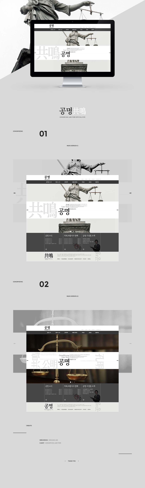

- GongMyung Law Firm Official Site
- 법률 사무소라는 기업의 정체성에 걸맞게 무게감이 잡힌 홈페이지를 디자인하였다. 메인 비쥬얼은 홈페이지의 정체성을 단번에 확립할 수 있는 이미지를 채택하였고, 메인 칼라로 주로 검은색, 회색, 흰색 등의 무채색의 계열을 적절히 사용해 홈페이지 전체의 무게감을 주었다. 폰트의 사용도 serif형식을 사용해 날카로우면서도 전문적인 느낌을 돋보이게 하였다.
-
Concept:Sharp, Professional, Clear
Date:2014
Color:blackwhitelightgray
Skills:Phostoshop
-
Client:Gong Myeong Law Firm
My role:Concept, Design
- 